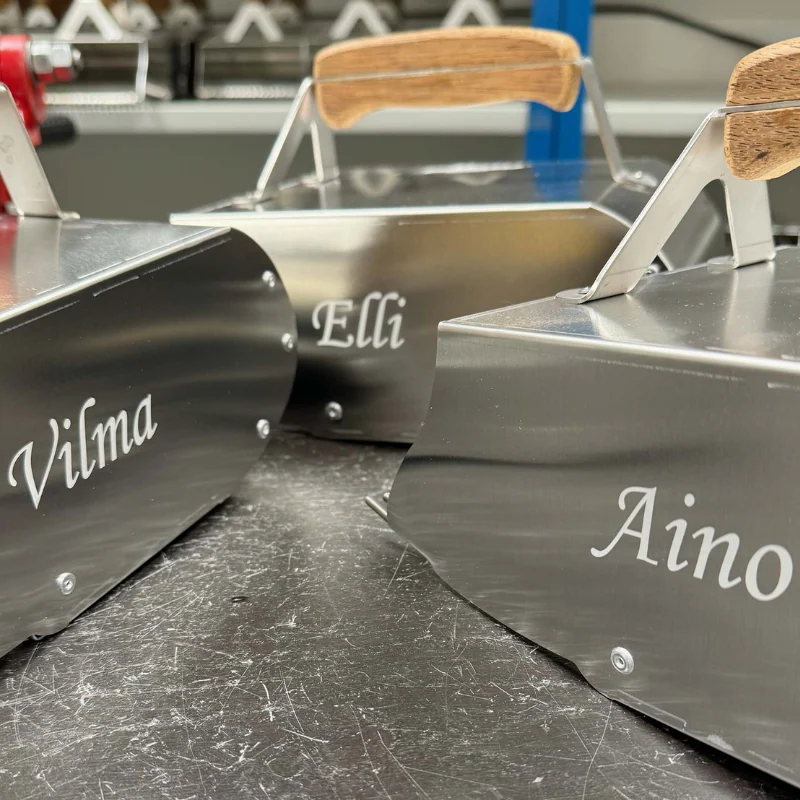
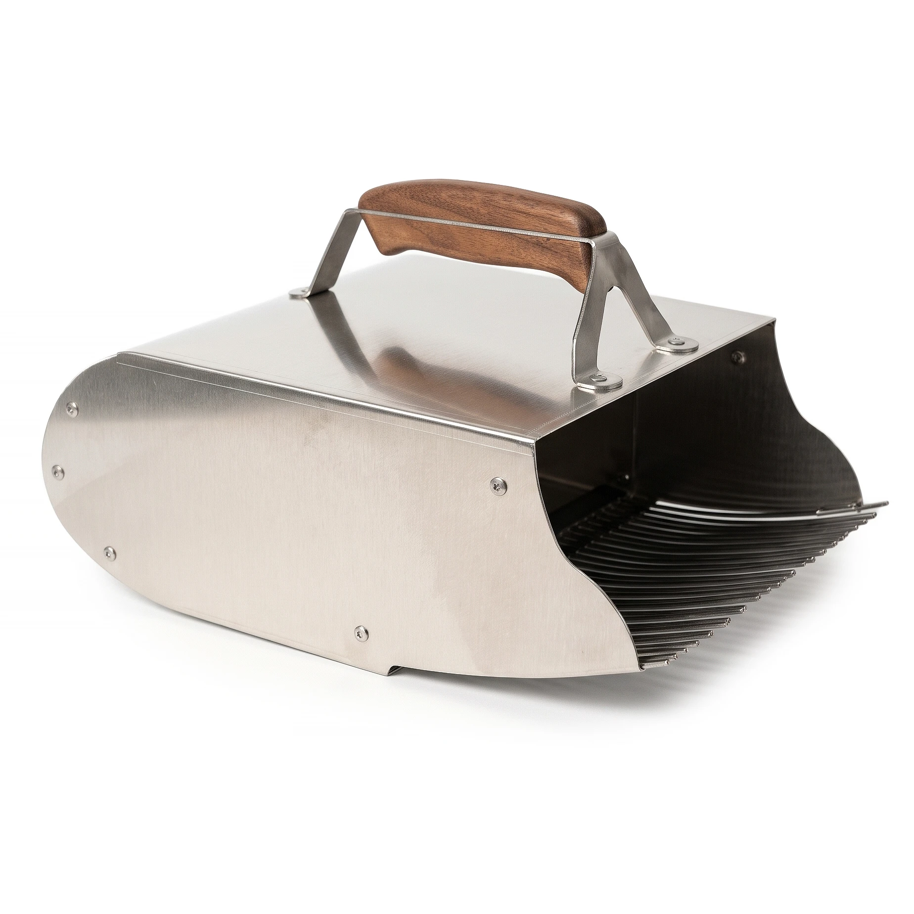

Pieni Poimu
Kevyt poimuri pienelle kädelle ja lyhyelle marjaretkelle. 83,50 €

Oma nimi tai tervehdys poimurin kylkeen.
Nimi, logo tai lyhyt teksti kaiverretaan poimurin kylkeen laserilla. Kirjoita toivomasi teksti ja kirjasintyyppi tilauksen kommentteihin kaupan kassalla.
Alumiinia ja puutaKestävä, kevyt rakenne
5 vuoden takuuRajoitettu valmistajan takuu
Toimitus alk. 9,90 €Manner-Suomeen
Maksuton noutoMyymälästämme Kuhmosta
Nimi, lyhyt tervehdys tai yrityksen tunnus tekee poimurista henkilökohtaisen lahjan. Kaiverrus toteutetaan laserilla; oletusarvoisesti se sijoitetaan poimurin vasempaan kylkeen. Noin 100 millimetrin levyisellä kaiverrusalalla tekstin pituus vaikuttaa kirjasinkokoon.
Kaiverrus ei sisällä poimuria. Valitse haluamasi malli Poimu-mallistosta.
Täydennä tilauksesi omalla, pitkäikäisellä marjanpoimurilla.
Kevyt poimuri pienelle kädelle ja lyhyelle marjaretkelle. 83,50 €

Tilava poimuri runsaaseen marjapaikkaan. 90,00 €

Leveä ammattilaisen poimuri tasaiselle kankaalle. 105,00 €
Ennen kuin teet ostopäätöksen, nämä oppaat auttavat valitsemaan oikean marjanpoimurin ja saamaan siitä kaiken hyödyn irti:
Voit kaiverruttaa esimerkiksi nimen, lyhyen tervehdyksen tai logon. Ilmoita teksti ja kirjasintyyli tilauksen kommenteissa.
Ei. Valitse poimuri ja kaiverrus verkkokaupassa erillisinä tuotteina.
Kyllä. Valitse kaksi kaiverrusta ja kerro tilauksen kommenteissa, mitä kummallekin kyljelle kaiverretaan.
Lähetä tilauksen jälkeen vektorimuotoinen PDF- tai AI-tiedosto Poimun sähköpostiin. Mikäli tiedostomuoto on muu, kysy neuvoa asiakaspalvelusta.
Kyllä. Poimun asiakaspalvelusta voi tiedustella toimitustapaa ja toimituskuluja ulkomaille.
Poimu-mallisto
 2,5 l
2,5 l
Kevyt poimuri pienelle kädelle ja lyhyelle marjaretkelle.
 4,5 l
4,5 l
Tilava poimuri runsaaseen marjapaikkaan.
 6 l
6 l
Leveä ammattilaisen poimuri tasaiselle kankaalle.